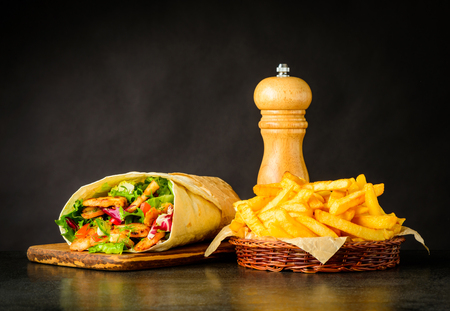

Shawarma Recipe
Shawarma is a popular Middle Eastern dish made with marinated meat that is cooked on a vertical rotisserie. Here is a simple recipe to make shawarma at home.

Ingredients:
- 500g boneless chicken thighs or beef/lamb slices
- 3 tablespoons olive oil
- 2 cloves garlic, minced
- 1 teaspoon ground cumin
- 1 teaspoon ground paprika
- 1/2 teaspoon ground turmeric
- 1/2 teaspoon ground coriander
- Salt and pepper to taste
- Pita bread or flat breads for serving
- Optional: sliced onions, tomatoes, cucumbers, and tahini sauce for garnish
Instructions:
- In a bowl, combine the olive oil, minced garlic, cumin, paprika, turmeric, coriander, salt, and pepper. Add the chicken or beef slices and toss to coat evenly. Marinate for at least 30 minutes, or overnight for best results.
- Preheat a grill or skillet over medium-high heat. Cook the marinated meat for 5-7 minutes on each side until fully cooked and slightly charred.
- Warm the pita bread or flat breads on the grill or in a pan.
- To assemble the shawarma, place the cooked meat on the warm bread and add your desired toppings such as sliced onions, tomatoes, cucumbers, and tahini sauce.
- Roll up the bread around the fillings and serve immediately. Enjoy your homemade shawarma!
Back to Recipe Collection